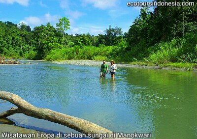

Manokwari adalah destinasi wisata alam pengamatan burung dan satwa liar yang penting di dunia. Banyak orang di daerah ini belum menyadarinya. Sebagai ibukota Provinsi Papua Barat, kota ini terletak di pesisir pantai Teluk Dore dan melebar ke arah wilayah perbukitan. Gunung, hutan dan pulau-pulau di sekitarnya membuat kota ini menjadi salah satu kota yang indah di Indonesia. Ada sejumlah tempat di sekitar kota ini yang layak dikunjungi oleh wisatawan yang ingin menikmati keindahan alam. Beberapa di antaranya adalah sebagai berikut:
Pegunungan Arfak sebagian wilayahnya masih berada di wilayah Kabupaten Manokwari. Hutan di sekitar Mokwam, Kampung Syioubri, Kwau dan Maybri serta kawasan pegunungan rendah di hutan Susnguakti merupakan wilayah pengamatan burung-burung surga yang terkenal di mata wisatawan internasional. Ada 42 spesies burung surga yang dikenal dalam dunia sains. Sebagian besar hidup di Tanah Papua. Hanya ada beberapa spesies di Halmahera, Aru dan Australia Utara.
Mansinam - Ini adalah nama sebuah pulau yang terletak di Teluk Dore. Tanggal 5 Februari 1855, dua orang Eropa, Carl Wilhelm Ottow, dan Johann Gottlob Geissler mendarat di Pulau Mansinam untuk memberitakan Injil kepada penduduk setempat. Setiap tahun, pada tanggal 5 Februari ribuan orang berwisata ke kota Manokwari dan Pulau Mansinam untuk melihat atraksi budaya yang berlangsung selama beberapa hari lamanya.
Wisatawan Italia sedang menikmati wisata snorkeling di Manokwari
Pantai dan Terumbu Larang - Ada beberapa pantai yang cocok untuk dijadikan sebagai lokasi wisata bagi para pelancong yang ingin melihat keindahan alam bahari Manokwari. Beberapa di antaranya adalah Pantai Pasir Putih, Pantai Petrus Kafiar, Pantai Amban, dan Pantai Asai. Untuk wisatawan yang ingin melihat keindahan terumbu karang bawa air, perairan Pulau Mansinam, Pantai Abasi dan Pantai Bakaro, serta Perairan Pulau Kaki adalah kawasan wisata snorkeling yang cocok untuk wisatawan yang ingin melihat bermacam-macam ikan yang berwarna-warni serta terumbu karang.
Wisatawan perempuan dari Selandia Baru sedang berenang di Manokwari
Gunung Meja - Ada berbagai jenis pohon yang bisa dilihat di kawan hutan hujan tropis ini, antara lain: pohon kayu besi, beringin, matoa, dan jati. Ada juga tumbuhan rotan yang banyak durinya serta tanaman anggrek. Berbagai macam jamur tumbuh di dahan dan batang pohon yang jatuh ke tanah. Ada juga gua-gua alam maupun lubang perlindungan tentara Jepang yang menarik bagi wisatawan.
Hutan Pantura - Daratan sepanjang Pantai Utara Manokwari ditutupi oleh hutan hujan tropis. Ada bermacam burung seperti kakaktua, luri kepala hitam, taun-taun, dan raja udang yang bisa dilihat di sana. Wisatawan perlu didampingi oleh pemandu turis yang berpengalaman jika mereka ingin ke sana.
Rainforest TourSulphur Crested Cockatoo
Wisatawan manca negara suka sekali menjelajah kawasan hutan di Pantura. Mereka datang dari Belanda, Inggris, Prancis, Swiss, China, Thailand, dan lain-lain. Tenda-tenda tempat mereka menginap dibangun di pinggir sungai. Rata-rata mereka tinggal selama 3 sampai 4 hari untuk mengamati burung, dan satwa liar yang ada di sana. Hutan di pantura ini sangat kaya dengan satwa burung seperti kakaktua putih, kakaktua raja, taun-taun, kumkum, raja udang azure, cendrawasih kuning kecil, glossy mantled manucode, burung surga raja dan toowa cemerlang, pacific bazza, dan masih banyak lagi.
Teropong pengamatan burung yang saya rekomendasikan:
Tanah Papua sejak ratusan tahun lalu telah dikunjungi oleh penjelajah Eropa yang datang untuk mencari rempah-rempah di daerah ini. Pada masa sekarang, kedatangan wisatawan yang ingin melihat keindahan alam dan keanekaragaman flora dan fauna diharapkan dapat memberikan peningkatan kesejahteraan masyarakat lewat penciptaan lapangan kerja, penjualan barang dan jasa yang dihasilkan oleh masyarakat setempat.
Pandemi Covid telah mengakibatkan lumpuhnya industri pariwisata secara global termasuk di Indonesia. Semoga di masa datang pendemi ini segera berlalu sehingga wisatawan bisa diperbolehkan lagi masuk ke Tanah Papua.
Ditulis oleh Charles Roring